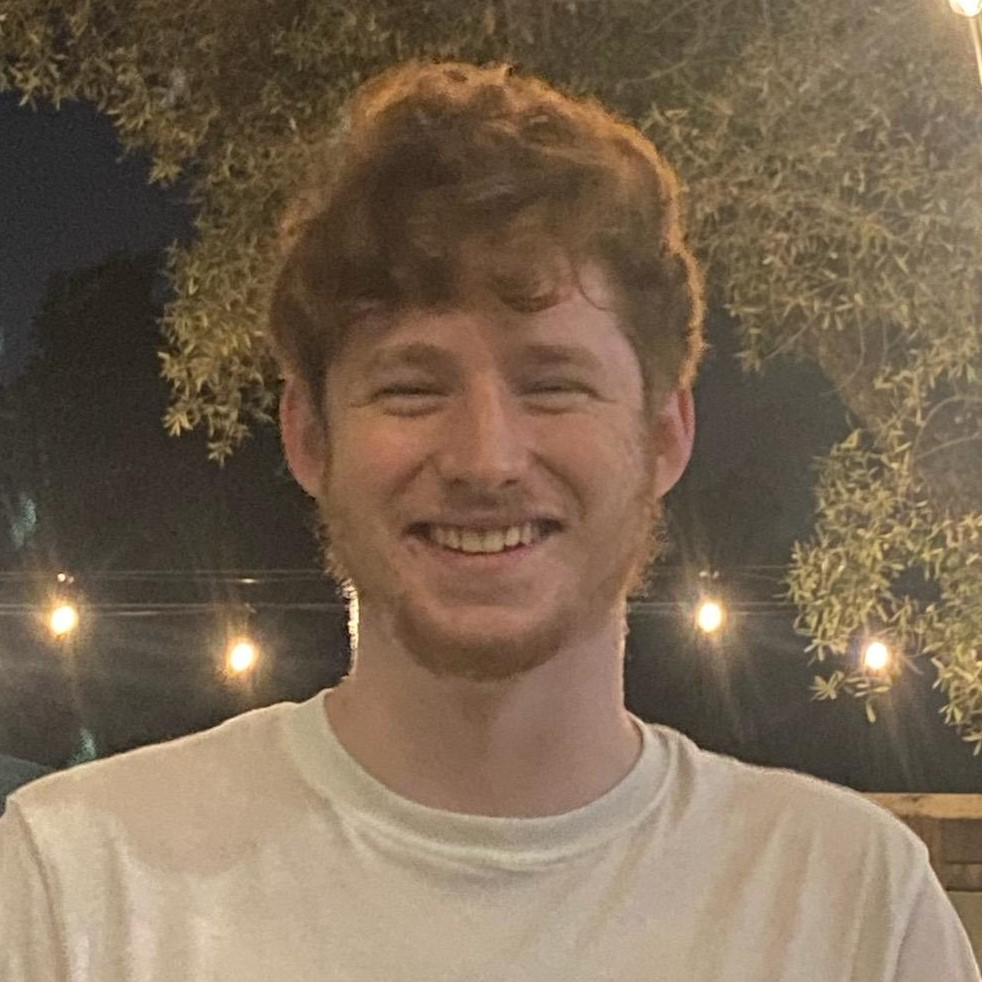

Milo Knell
Researcher and programmer
About me
Hi! I'm a computer science and math major at Harvey Mudd college in my sophmore year. I love machine learning and artificial intiligence, especially creating novel algorithms and proving theoretical limits on learning systems.
I have experience in both academic research and industry software development. I love tackling new problems and pushing the limits of my knowledge, especially alongside brilliant people.
I have experience in both academic research and industry software development. I love tackling new problems and pushing the limits of my knowledge, especially alongside brilliant people.

Projects
Keous
Datathon 1st Place
Terminal RL
Cataclysmic Variable Stars